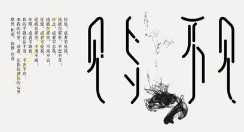
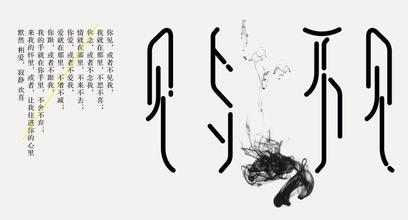

-
我的音乐爱好
我很喜欢听音乐，各种类型都喜欢，轻音乐，摇滚，爵士，DJ，小语种等等，我都喜欢。比如：
Hidden---Miaow
Cro Magnon Man---The Stark Palace
Bubble
....
-
我的运动生涯
我喜欢各种各样的运动，跑步，跳绳，我很喜欢跳舞，比如爵士，街舞，我还热衷于瑜伽
-
我喜欢的电影之赌神二
赌神，从小到大很喜欢的一系列电影，这是其中一个很精彩的片段。《赌神2》是由王晶导演，周润发、梁家辉、邱淑贞主演的一部香港动作电影。讲述了这样一个故事：赌神高进虽然经历过重重风浪，击败过无数对手，但早已看透世情，无心恋战。遂决定退出赌坛，与妻子温柔隐居法国巴黎，过着安稳宁静的生活。但是台湾东湖帮仇笑痴野心勃勃，蓄意消灭赌神，取代赌神在赌坛屹立不倒的地位，更可借此独吞朱老先生死后所成立的“救助儿童基金”达16亿美元。仇笑痴为迫高进重出江湖，将其妻阿柔及其腹中胎儿杀掉。当进得知妻儿死后，十分悲痛，在龙的劝说下，高进决定一人回大陆散心，后来又发生了一系列的事情。最后为了替亲人和朋友报仇，高进终于再度披上战衣，接受仇笑痴的挑战。
-
 第一最好不相见，如此便可不相恋。 第二最好不相知，如此便可不相思。 第三最好不相伴，如此便可不相欠。 第四最好不相惜，如此便可不相忆。 第五最好不相爱，如此便可不相弃。 第六最好不相对，如此便可不相会。 第七最好不相误，如此便可不相负。 第八最好不相许，如此便可不相续。 第九最好不相依，如此便可不相偎。 第十最好不相遇，如此便可不相聚。 但曾相见便相知，相见何如不见时。 安得与君相诀绝，免教生死作相思。你见，或者不见我 我就在那里 不悲不喜 你念，或者不念我 情就在那里 不来不去 你爱，或者不爱我 爱就在那里 不增不减 你跟，或者不跟我 我的手就在你手里 不舍不弃 来我的怀里 或者 让我住进你的心里 默然 相爱 寂静 欢喜那一刻 我升起风马不为乞福 只为守候你的到来 那一天 闭目在经殿香雾中蓦然听见 你颂经中的真言 那一日 垒起玛尼堆不为修德 只为投下心湖的石子 那一夜 我听了一宿梵唱不为参悟 只为寻你的一丝气息 那一月 我摇动所有的经筒不为超度 只为触摸你的指尖 那一年 磕长头匍匐在山路不为觐见 只为贴着你的温暖 那一世 转山转水转佛塔啊不为修来生 只为途中与你相见 那一瞬，我飞升成仙，不为长生，只为佑你平安喜乐住进布达拉宫， 我是雪域最大的王。 流浪在拉萨街头， 我是世间最美的情郎。 我问佛：为何不给所有女子羞花闭月的容颜？ 佛曰：那只是昙花的一现，用来蒙蔽世俗的眼 没有什么美可以抵过一颗纯净仁爱的心 我把它赐给每一个女子 可有人让它蒙上了灰 我问佛：世间为何有那么多遗憾？ 佛曰：这是一个婆娑世界，婆娑即遗憾 没有遗憾，给你再多幸福也不会体会快乐 我问佛：如何让人们的心不再感到孤单？ 佛曰：每一颗心生来就是孤单而残缺的 多数带着这种残缺度过一生 只因与能使它圆满的另一半相遇时 不是疏忽错过，就是已失去了拥有它的资格 我问佛：如果遇到了可以爱的人，却又怕不能把握该怎么办？ 佛曰：留人间多少爱，迎浮世千重变 和有情人，做快乐事 别问是劫是缘 佛说：万法皆生，皆系缘份，偶然的相遇，暮然的回首，注定彼此的一生，只为眼光交 汇的刹那。 缘起即灭，缘生已空。 我也曾如你般天真 佛门中说一个人悟道有三阶段：“勘破、放下、自在。” 的确，一个人必须要放下，才能得到自在。 我问佛：为什么总是在我悲伤的时候下雪 佛说：冬天就要过去，留点记忆 我问佛:为什么每次下雪都是我不在意的夜晚 佛说:不经意的时候人们总会错过很多真正的美丽
第一最好不相见，如此便可不相恋。 第二最好不相知，如此便可不相思。 第三最好不相伴，如此便可不相欠。 第四最好不相惜，如此便可不相忆。 第五最好不相爱，如此便可不相弃。 第六最好不相对，如此便可不相会。 第七最好不相误，如此便可不相负。 第八最好不相许，如此便可不相续。 第九最好不相依，如此便可不相偎。 第十最好不相遇，如此便可不相聚。 但曾相见便相知，相见何如不见时。 安得与君相诀绝，免教生死作相思。你见，或者不见我 我就在那里 不悲不喜 你念，或者不念我 情就在那里 不来不去 你爱，或者不爱我 爱就在那里 不增不减 你跟，或者不跟我 我的手就在你手里 不舍不弃 来我的怀里 或者 让我住进你的心里 默然 相爱 寂静 欢喜那一刻 我升起风马不为乞福 只为守候你的到来 那一天 闭目在经殿香雾中蓦然听见 你颂经中的真言 那一日 垒起玛尼堆不为修德 只为投下心湖的石子 那一夜 我听了一宿梵唱不为参悟 只为寻你的一丝气息 那一月 我摇动所有的经筒不为超度 只为触摸你的指尖 那一年 磕长头匍匐在山路不为觐见 只为贴着你的温暖 那一世 转山转水转佛塔啊不为修来生 只为途中与你相见 那一瞬，我飞升成仙，不为长生，只为佑你平安喜乐住进布达拉宫， 我是雪域最大的王。 流浪在拉萨街头， 我是世间最美的情郎。 我问佛：为何不给所有女子羞花闭月的容颜？ 佛曰：那只是昙花的一现，用来蒙蔽世俗的眼 没有什么美可以抵过一颗纯净仁爱的心 我把它赐给每一个女子 可有人让它蒙上了灰 我问佛：世间为何有那么多遗憾？ 佛曰：这是一个婆娑世界，婆娑即遗憾 没有遗憾，给你再多幸福也不会体会快乐 我问佛：如何让人们的心不再感到孤单？ 佛曰：每一颗心生来就是孤单而残缺的 多数带着这种残缺度过一生 只因与能使它圆满的另一半相遇时 不是疏忽错过，就是已失去了拥有它的资格 我问佛：如果遇到了可以爱的人，却又怕不能把握该怎么办？ 佛曰：留人间多少爱，迎浮世千重变 和有情人，做快乐事 别问是劫是缘 佛说：万法皆生，皆系缘份，偶然的相遇，暮然的回首，注定彼此的一生，只为眼光交 汇的刹那。 缘起即灭，缘生已空。 我也曾如你般天真 佛门中说一个人悟道有三阶段：“勘破、放下、自在。” 的确，一个人必须要放下，才能得到自在。 我问佛：为什么总是在我悲伤的时候下雪 佛说：冬天就要过去，留点记忆 我问佛:为什么每次下雪都是我不在意的夜晚 佛说:不经意的时候人们总会错过很多真正的美丽